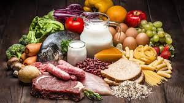
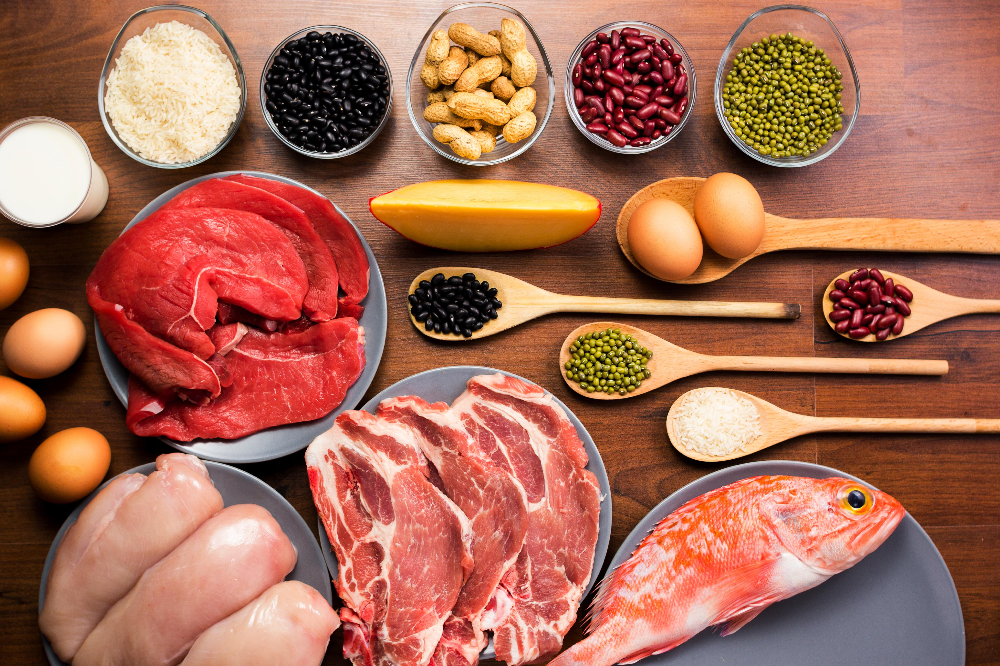

4 pasos para una vida más saludable

Fase 1
Pérdida de peso rápida
A través de un enfoque bajo en carbohidratos, todos los alimentos tradicionales son reemplazados por comidas, acompañadas de verduras, con el fin de estimular al cuerpo a utilizar las reservas de grasa como la principal fuente de energía.

Fase 2
Pérdida progresiva de peso
Introducción de carnes y pescados magros para promover la pérdida de peso continua y crear hábitos alimenticios más saludables.

Fase 3
Estabilización del peso
Reintroducción de alimentos con bajo índice glucémico, como fruta y lácteos, para así iniciar la reeducación alimentaria.

Fase 4
Mantenimiento del peso
Después de alcanzar tu objetivo, se vuelve a la alimentación 100% tradicional y se continúa con citas gratuitas cada 10 dias para mantener el peso a largo plazo.